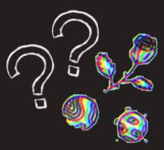
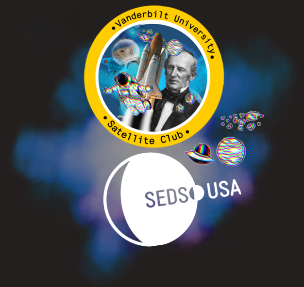

 
The Vanderbilt Satellite Club is a student-led project team for
undergraduate students interested in space disciplines and industry
involvement at Vanderbilt and beyond. The club operates in partnership with
and as a chapter of the Students for the Exploration and Development of
Space (SEDS), an international student organization whose purpose is to promote
space exploration and development through educational and engineering projects
(read more about this organization below)

The primary objective of the Vanderbilt Satellite Team is to supplement and
encourage student passion for space disciplines in the Vanderbilt community.
Vanderbilt’s Institute for Space and Defense Electronics contributes greatly to
the development of radiation-hardened electronics and research analysis of radiation
effects on mechanical and electrical space systems. Vanderbilt’s complementary Aerospace
Design Laboratory produces novel rocket-flyable payloads for NASA competitions.
Vanderbilt’s considerable history in the space industry propels the Vanderbilt
Satellite Team to continue to network with space industry professionals and
share their ideas about space.
SEDS is an international organization founded at MIT in 1980. Each year,
the organization hosts SpaceVision conferences and lectures series, sometimes in
conjunction with the International Space Development Conference. The organization
defines its primary purpose as “promoting space exploration and development through
educational and engineering projects.” The United States SEDs organization oversees
and interacts with individual chapters. To learn more about SEDS, visit
https://seds.org/.